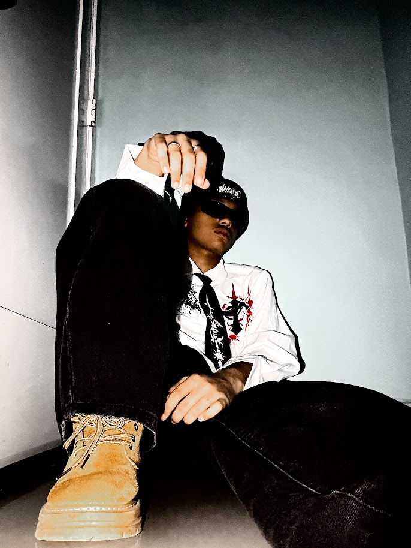

Desarrollo web
Maquetación de páginas estáticas con HTML y CSS, organización del contenido y principios de diseño.
ESTUDIANTE TÉCNICO EN INFORMÁTICA · REPÚBLICA DOMINICANA
Desarrollo web y software Bases de datos 💻
Soy estudiante de Informática en el Politécnico Profesor Victor Pascual Agüero. Me interesa convertir ideas en soluciones funcionales mediante páginas web, aplicaciones de escritorio y bases de datos.

Soy Yeider Rafael Lebron Pimentel, estudiante de Educación Secundaria Técnica en Informática en el Politécnico Profesor Victor Pascual Agüero (PPVPA), en Santo Domingo. Me he formado en desarrollo web, bases de datos y aplicaciones de escritorio.
En proyectos escolares he trabajado con HTML y CSS, aplicaciones Windows Forms en C#, modelado de datos y consultas SQL. También me interesa analizar procesos, detectar problemas y representar información de forma clara.
Maquetación de páginas estáticas con HTML y CSS, organización del contenido y principios de diseño.
Creación de formularios y aplicaciones básicas Windows Forms usando C#, validación de datos y conexión con SQL.
Modelado entidad-relación, consultas MySQL, reportes en Excel y visualización de datos con Power BI.
Tipos de trabajos académicos descritos en mi currículum. Aquí podré añadir capturas y enlaces a cada proyecto concreto.
Creación de páginas web estáticas, estructura semántica y estilos adaptados al contenido.
Interfaces Windows Forms con formularios, validación de datos y conexión a bases SQL.
Tablas y consultas MySQL; organización de información y visualizaciones para proyectos escolares.
Formación y experiencia práctica en el ámbito escolar, según mi currículum. No se presentan como empleos profesionales.
Creación de páginas web estáticas con HTML y CSS, organización de contenido y aplicación de principios básicos de diseño.
Desarrollo de aplicaciones básicas con Windows Forms en C#, diseño de formularios, validación de datos y conexión con bases SQL.
Modelado entidad-relación, creación de tablas y consultas MySQL; análisis de procesos, reportes en Excel y visualización en Power BI.
2023–2026 · Santo Domingo, República Dominicana
Puedes escribirme para conversar sobre proyectos web, software, datos y oportunidades de aprendizaje o colaboración.